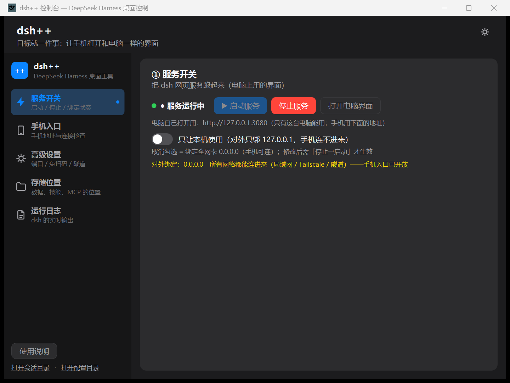
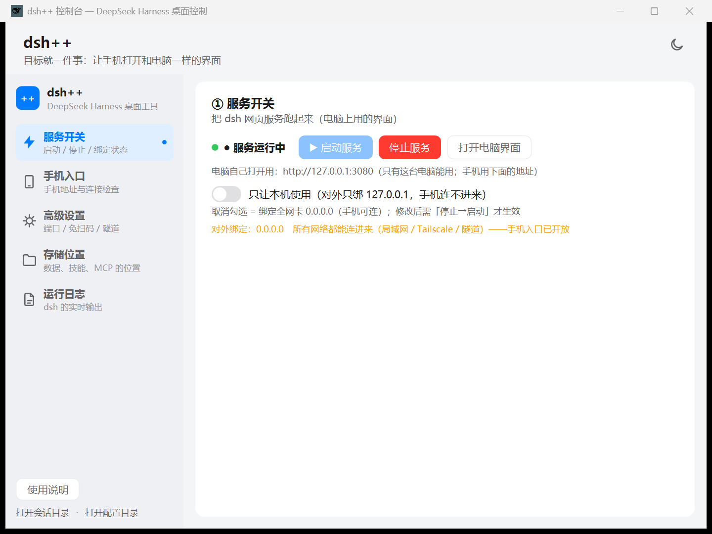

一个窗口，管好 dsh 的全部日常操作
启动 / 停止 dsh web，实时显示运行状态与对外绑定（0.0.0.0 全网卡 或 127.0.0.1 仅本机）。
同一 Wi-Fi / 自定义域名 / Tailscale 三种方式，大字地址一键复制，附「缺什么点什么」检查清单。
登录 / 连接 / 断开 / 安装一体化，跨网络也完全实时，状态与 ts.net 域名实时显示。
settings / sessions / storages / profiles / skills / agent-presets 一页看清；技能与 MCP 位置一键直达，主目录可直接修改。
一键关闭手机远程插件的配对门禁，手机打开地址即可使用。
自动为网页入口注入 polyfill，旧手机浏览器也能用；npm 更新覆盖后自动重新注入。
从下载到手机打开，不超过两分钟
Windows 10/11 + .NET 8 SDK，已安装 DeepSeek Harness（≥ 0.1.0-rc.6）
git clone https://github.com/Jensen-Yao/dsh-plus-plus.git cd dsh-plus-plus dotnet publish dsh-plus-plus.csproj -c Release -r win-x64 -o publish # 产物：publish/dsh-plus-plus.exe + compat-polyfill.js
无窗口自检：dsh-plus-plus.exe --smoke（诊断写到 %TEMP%\dsh-control-smoke.txt）